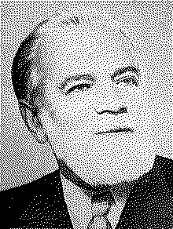

математик · №021 · Ф
Григорий Фихтенгольц
1888–1959 · матан целой страны
| годы | 1888–1959 |
| где | Ленинградский университет, 40+ лет |
| главный труд | «Курс дифференциального и интегрального исчисления» (3 т.) |
| ещё | инициатор матолимпиад |
| связано | Курс · Вентцель (ученица) · книжная полка |
объект · математик · ~130 слов · 2 мин
тот, по чьему курсу училась страна.
Григорий Фихтенгольц больше сорока лет читал лекции в Ленинградском университете.
Почти все ленинградские математики так или иначе были его учениками. Его трёхтомный «Курс дифференциального и интегрального исчисления» стал тем самым матаном, по которому выучилась страна, — подробным, неспешным, человеческим. Он же стоял у истоков математических олимпиад: думал не только о тех, кто уже в науке, но и о тех, кого в неё ещё надо влюбить. Среди его учеников — Елена Вентцель, написавшая канонический учебник теории вероятностей.